Protezione dei dispositivi, dei dati personali e della privacy (slide 47–108) ed e-commerce e social network per il marketing (slide 109–129): tutte le slide originali, con le integrazioni essenziali e altre facoltative.
Le slide del modulo · le slide originali sono intatte, quelle con l’etichetta colorata sono integrazioni
UD12 · Competenze digitali · Incontro 4 di 4 · lunedì 16 novembre 2026 · 2 ore online
Sicurezza, privacy ed e-commerce
Proteggere dispositivi e dati della propria attività, rispettare la privacy dei clienti, vendere e comunicare online misurando i risultati.
Slide originali UD12 · 47–129+ simulazioni ed eserciziDocente: Ing. Antonio Adinolfi
Se domani perdeste il telefono, che cosa perdereste davvero?
Contatti dei clienti, foto dei lavori, accesso alla banca, alla PEC, ai social dell’attività… Fate la lista mentalmente: la riprendiamo alla fine della sezione 5.
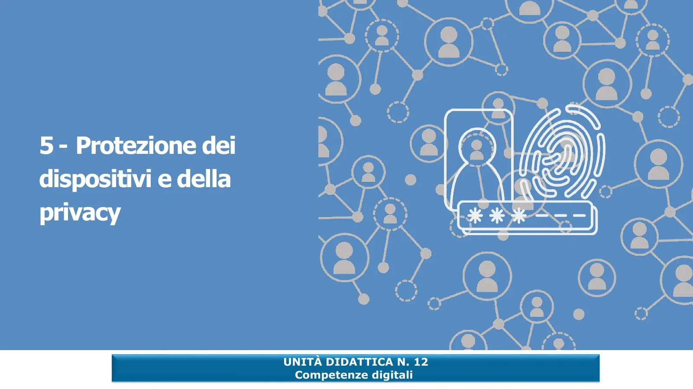
5 - Protezione dei dispositivi e della privacy
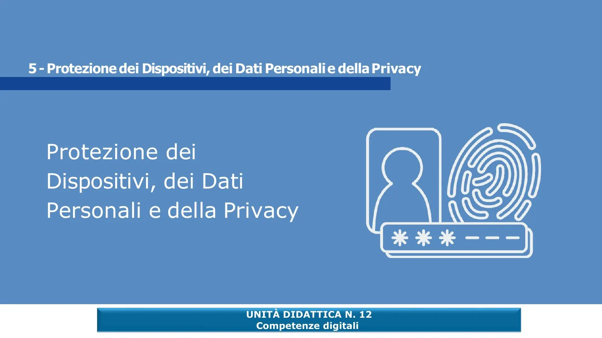
Protezione dei Dispositivi, dei Dati Personali e della Privacy
Che cosa vuol dire «sicurezza» delle informazioni
Esempi: password rubata → riservatezza · listino alterato → integrità · ransomware o disco guasto → disponibilità.
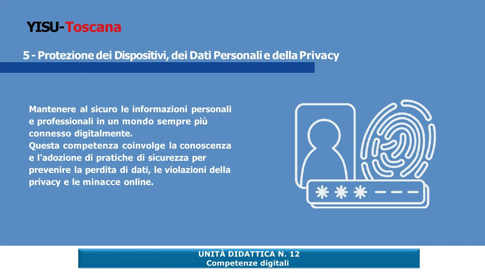
Mantenere al sicuro le informazioni personali e professionali in un mondo sempre più connesso digitalmente. Questa competenza coinvolge la conoscenza e l'adozione di pratiche di sicurezza per prevenire la perdita di dati, le violazioni della privacy e le minacce online.
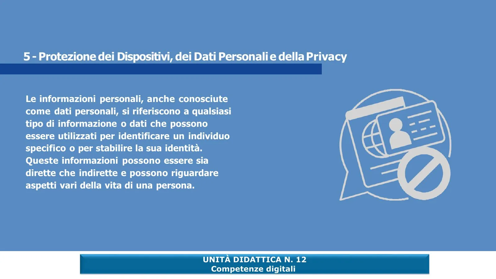
Le informazioni personali, anche conosciute come dati personali, si riferiscono a qualsiasi tipo di informazione o dati che possono essere utilizzati per identificare un individuo specifico o per stabilire la sua identità. Queste informazioni possono essere sia dirette che indirette e possono riguardare aspetti vari della vita di una persona.
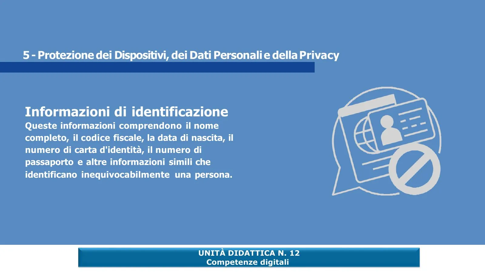
Informazioni di identificazione Queste informazioni comprendono il nome completo, il codice fiscale, la data di nascita, il numero di carta d'identità, il numero di passaporto e altre informazioni simili che identificano inequivocabilmente una persona.
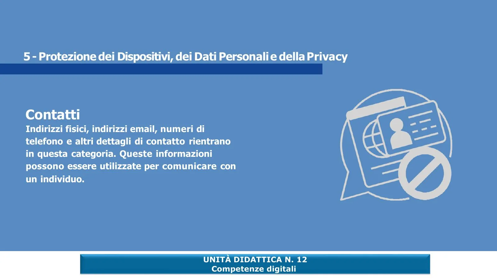
Contatti Indirizzi fisici, indirizzi email, numeri di telefono e altri dettagli di contatto rientrano in questa categoria. Queste informazioni possono essere utilizzate per comunicare con un individuo.
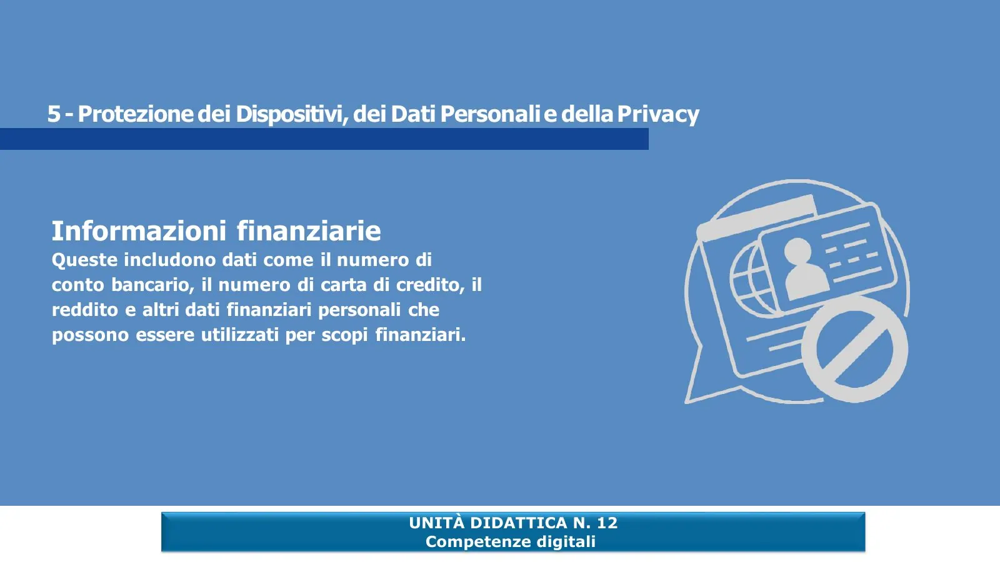
Informazioni finanziarie Queste includono dati come il numero di conto bancario, il numero di carta di credito, il reddito e altri dati finanziari personali che possono essere utilizzati per scopi finanziari.
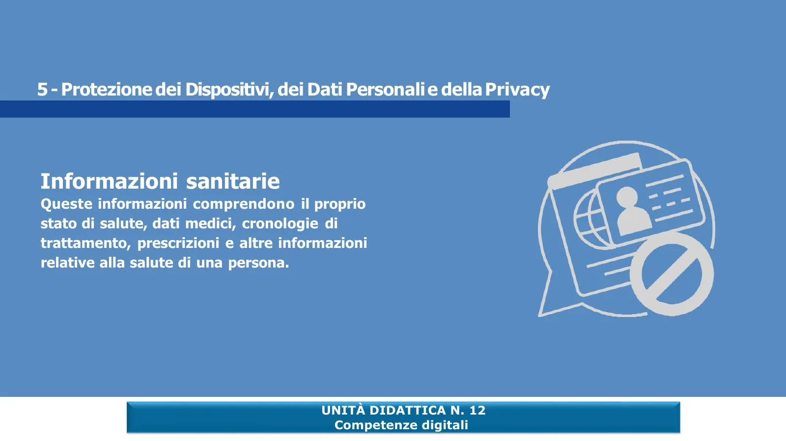
Informazioni sanitarie Queste informazioni comprendono il proprio stato di salute, dati medici, cronologie di trattamento, prescrizioni e altre informazioni relative alla salute di una persona.
Informazioni lavorative Queste informazioni riguardano l'occupazione di una persona e possono includere il nome del datore di lavoro, la posizione lavorativa, il salario e la storia professionale.
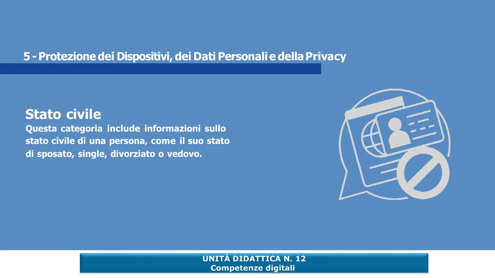
Stato civile Questa categoria include informazioni sullo stato civile di una persona, come il suo stato di sposato, single, divorziato o vedovo.
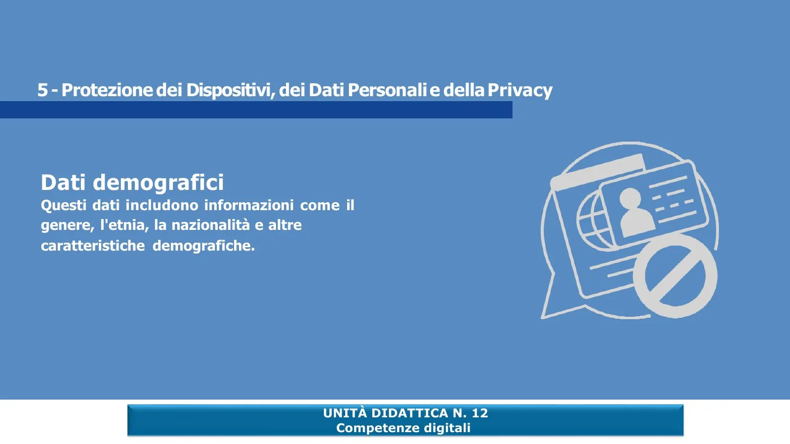
Dati demografici Questi dati includono informazioni come il genere, l'etnia, la nazionalità e altre caratteristiche demografiche.
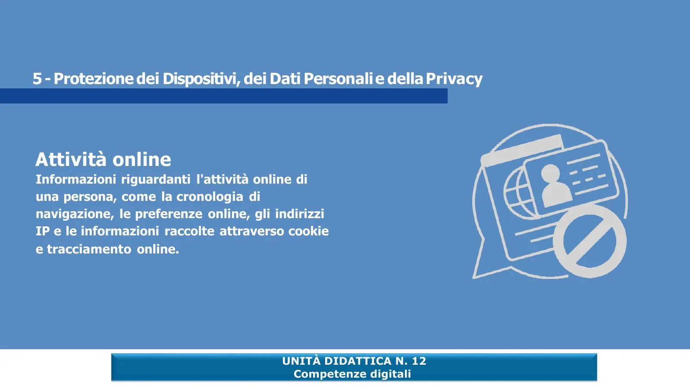
Attività online Informazioni riguardanti l'attività online di una persona, come la cronologia di navigazione, le preferenze online, gli indirizzi IP e le informazioni raccolte attraverso cookie e tracciamento online.
Che tipo di dato è?
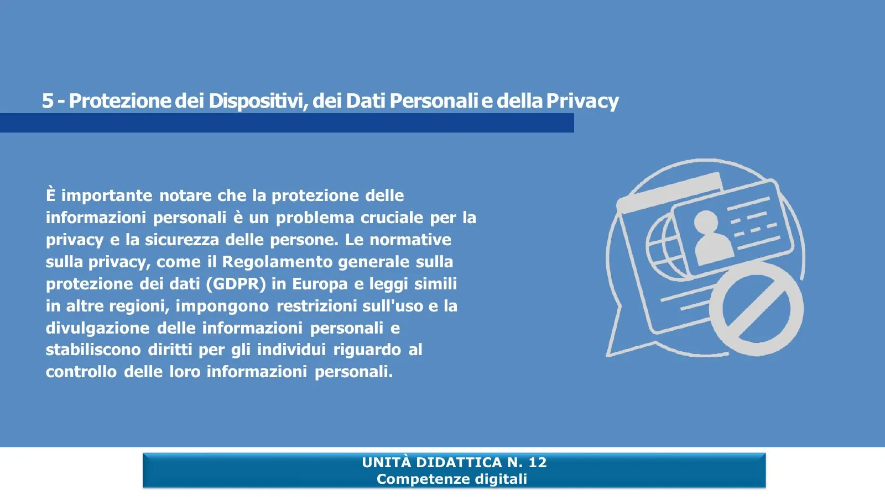
È importante notare che la protezione delle informazioni personali è un problema cruciale per la privacy e la sicurezza delle persone. Le normative sulla privacy, come il Regolamento generale sulla protezione dei dati (GDPR) in Europa e leggi simili in altre regioni, impongono restrizioni sull'uso e la divulgazione delle informazioni personali e stabiliscono diritti per gli individui riguardo al controllo delle loro informazioni personali.
GDPR: che cosa cambia per chi apre un’attività
Principi
Raccogliere solo i dati necessari
Per uno scopo chiaro
Conservarli il tempo necessario
Proteggerli adeguatamente
Obblighi pratici
Informativa privacy ai clienti (anche sul sito)
Consenso quando serve (es. newsletter)
Registro dei trattamenti se richiesto
Segnalare al Garante le violazioni gravi entro 72 ore
Diritti dei clienti
Accesso ai propri dati
Rettifica e cancellazione
Opposizione (es. al marketing)
Portabilità
Regolamento (UE) 2016/679. Riferimento in Italia: Garante per la protezione dei dati personali (garanteprivacy.it).
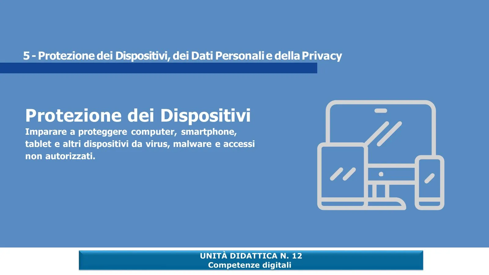
Protezione dei Dispositivi Imparare a proteggere computer, smartphone, tablet e altri dispositivi da virus, malware e accessi non autorizzati.
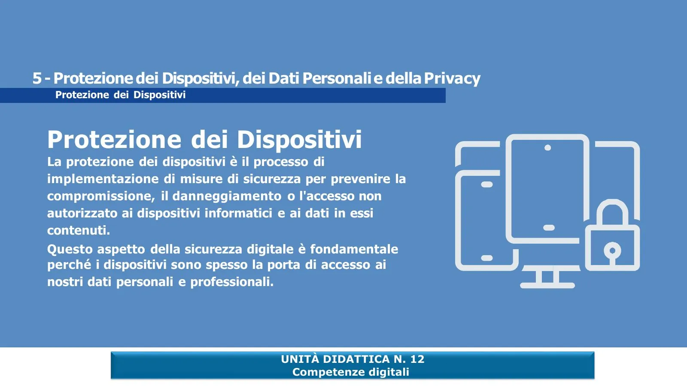
Protezione dei Dispositivi Protezione dei Dispositivi La protezione dei dispositivi è il processo di implementazione di misure di sicurezza per prevenire la compromissione, il danneggiamento o l'accesso non autorizzato ai dispositivi informatici e ai dati in essi contenuti. Questo aspetto della sicurezza digitale è fondamentale perché i dispositivi sono spesso la porta di accesso ai nostri dati personali e professionali.
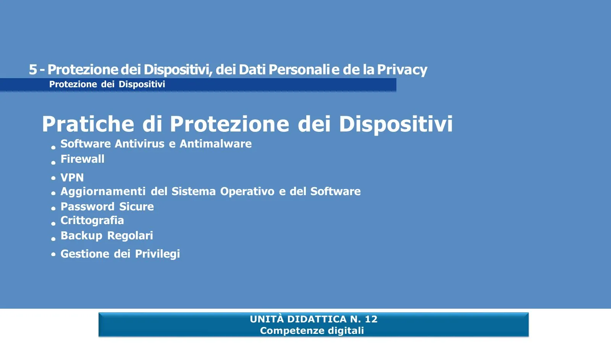
Protezione dei Dispositivi Pratiche di Protezione dei Dispositivi Software Antivirus e Antimalware Firewall VPN Aggiornamenti del Sistema Operativo e del Software Password Sicure Crittografia Backup Regolari Gestione dei Privilegi
Nessuna misura basta da sola: la difesa a strati
Se uno strato cede, il successivo limita il danno.
Gestione dei privilegi: lavorate ogni giorno con un account non amministratore.
Il primo strato siete voi: la maggior parte degli attacchi parte da un clic su un link o un allegato.
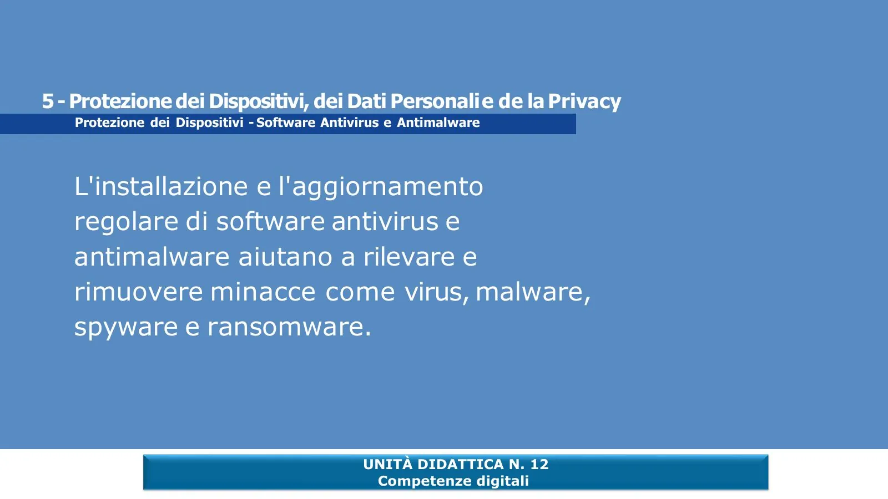
Protezione Protezione dei dei Dispositivi Dispositivi - Software Antivirus e Antimalware L'installazione e l'aggiornamento regolare di software antivirus e antimalware aiutano a rilevare e rimuovere minacce come virus, malware, spyware e ransomware.
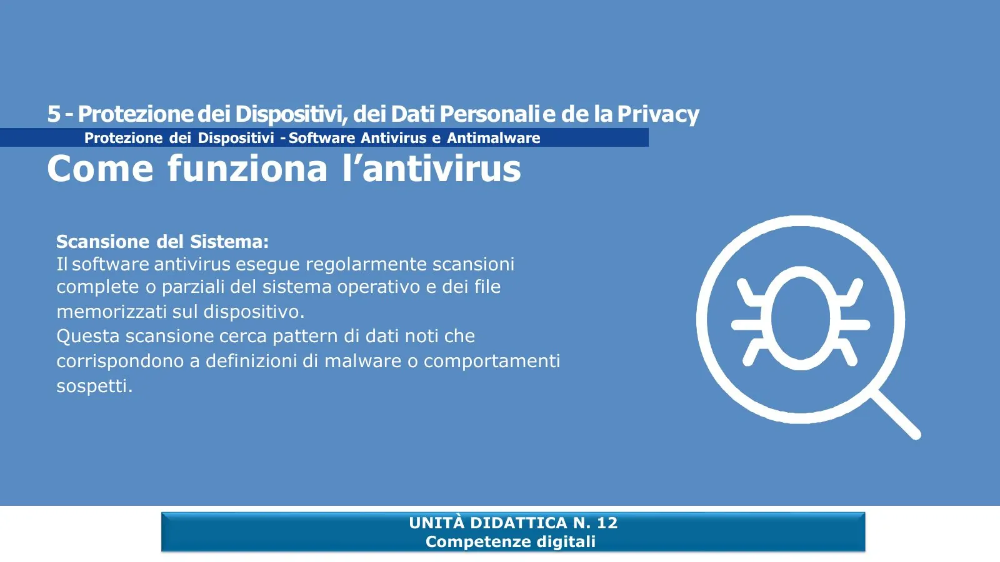
Protezione dei Dispositivi - Software Antivirus e Antimalware Come funziona l’antivirus Scansione del Sistema: Il software antivirus esegue regolarmente scansioni complete o parziali del sistema operativo e dei file memorizzati sul dispositivo. Questa scansione cerca pattern di dati noti che corrispondono a definizioni di malware o comportamenti sospetti.
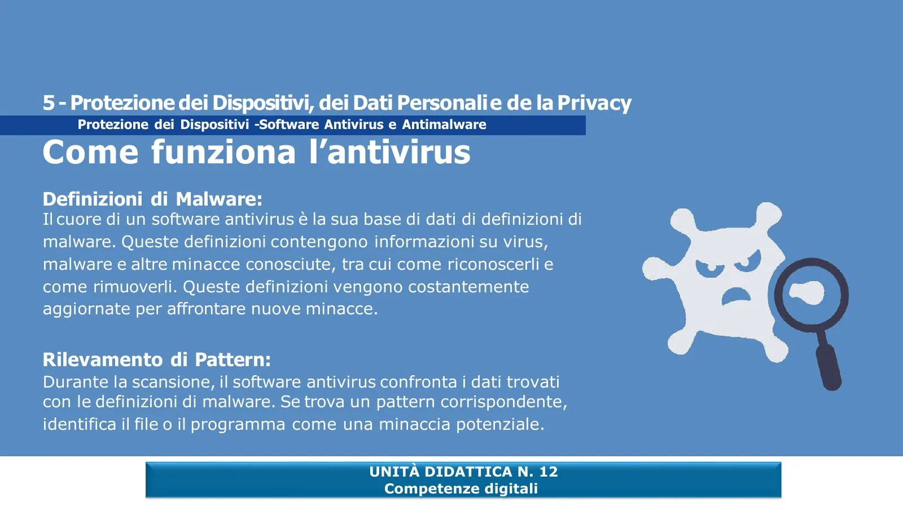
Protezione dei Dispositivi -Software Antivirus e Antimalware Come funziona l’antivirus Definizioni di Malware: Il cuore di un software antivirus è la sua base di dati di definizioni di malware. Queste definizioni contengono informazioni su virus, malware e altre minacce conosciute, tra cui come riconoscerli e come rimuoverli. Queste definizioni vengono costantemente aggiornate per affrontare nuove minacce. Rilevamento di Pattern: Durante la scansione, il software antivirus confronta i dati trovati con le definizioni di malware. Se trova un pattern corrispondente, identifica il file o il programma come una minaccia potenziale.
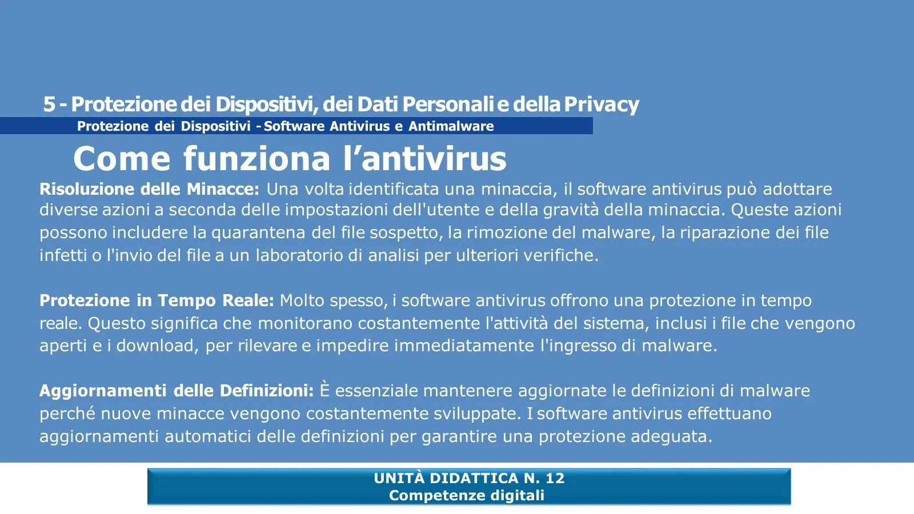
Protezione dei Dispositivi - Software Antivirus e Antimalware Come funziona l’antivirus Risoluzione delle Minacce: Una volta identificata una minaccia, il software antivirus può adottare diverse azioni a seconda delle impostazioni dell'utente e della gravità della minaccia. Queste azioni possono includere la quarantena del file sospetto, la rimozione del malware, la riparazione dei file infetti o l'invio del file a un laboratorio di analisi per ulteriori verifiche. Protezione in Tempo Reale: Molto spesso, i software antivirus offrono una protezione in tempo reale. Questo significa che monitorano costantemente l'attività del sistema, inclusi i file che vengono aperti e i download, per rilevare e impedire immediatamente l'ingresso di malware. Aggiornamenti delle Definizioni: È essenziale mantenere aggiornate le definizioni di malware perché nuove minacce vengono costantemente sviluppate. I software antivirus effettuano aggiornamenti automatici delle definizioni per garantire una protezione adeguata.
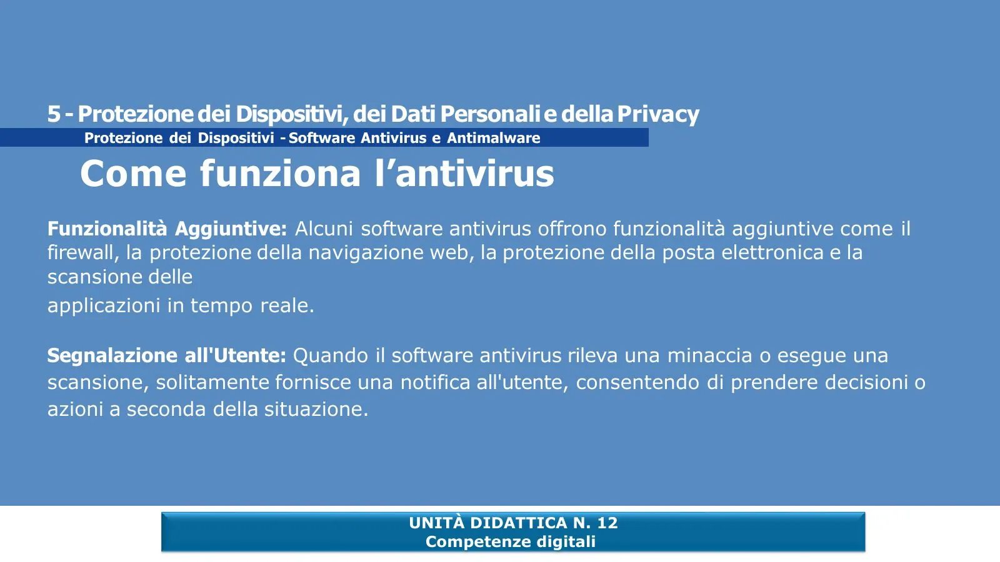
Protezione dei Dispositivi - Software Antivirus e Antimalware Come funziona l’antivirus Funzionalità Aggiuntive: Alcuni software antivirus offrono funzionalità aggiuntive come il firewall, la protezione della navigazione web, la protezione della posta elettronica e la scansione delle applicazioni in tempo reale. Segnalazione all'Utente: Quando il software antivirus rileva una minaccia o esegue una scansione, solitamente fornisce una notifica all'utente, consentendo di prendere decisioni o azioni a seconda della situazione.
Come ragiona un antivirus
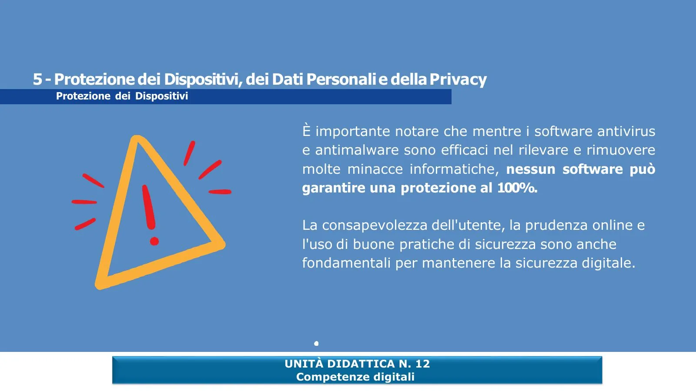
Protezione dei Dispositivi È importante notare che mentre i software antivirus e antimalware sono efficaci nel rilevare e rimuovere molte minacce informatiche, nessun software può garantire una protezione al 100%. La consapevolezza dell'utente, la prudenza online e l'uso di buone pratiche di sicurezza sono anche fondamentali per mantenere la sicurezza digitale.
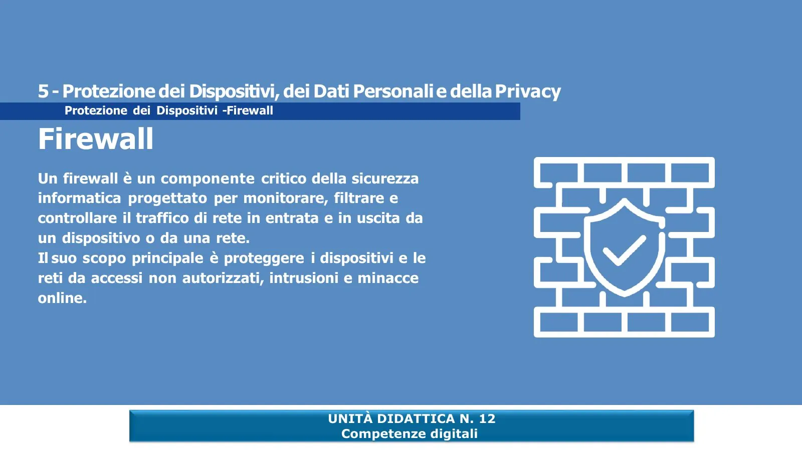
Protezione dei Dispositivi -Firewall Firewall Un firewall è un componente critico della sicurezza informatica progettato per monitorare, filtrare e controllare il traffico di rete in entrata e in uscita da un dispositivo o da una rete. Il suo scopo principale è proteggere i dispositivi e le reti da accessi non autorizzati, intrusioni e minacce online.
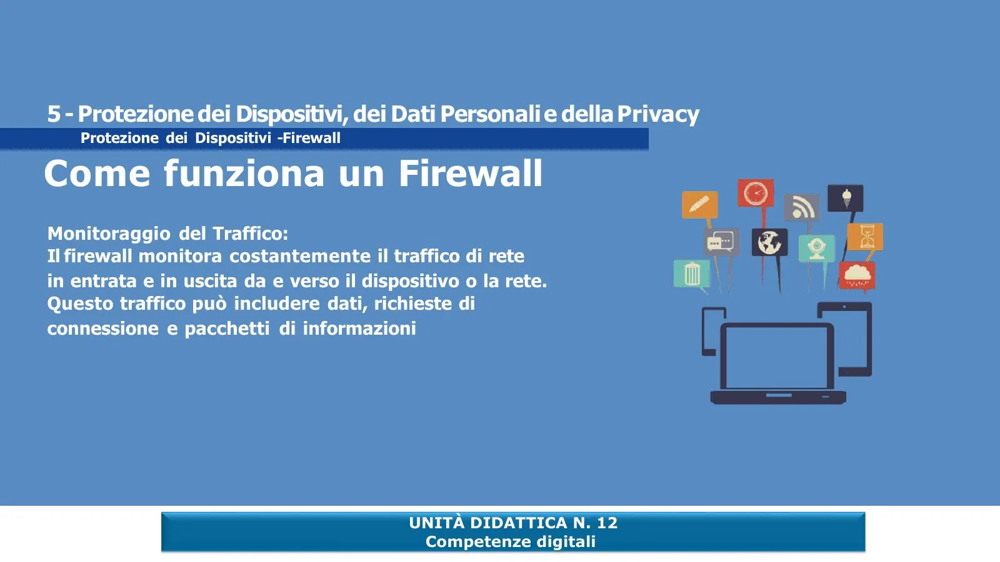
Protezione dei Dispositivi -Firewall Come funziona un Firewall Monitoraggio del Traffico: Il firewall monitora costantemente il traffico di rete in entrata e in uscita da e verso il dispositivo o la rete. Questo traffico può includere dati, richieste di connessione e pacchetti di informazioni
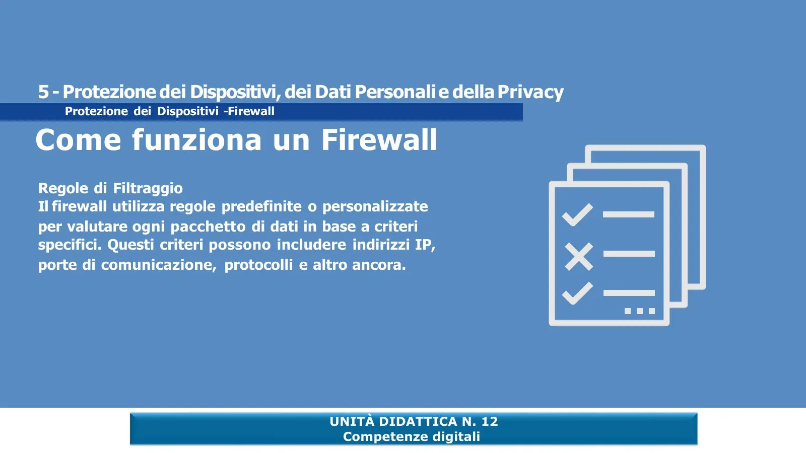
Protezione dei Dispositivi -Firewall Come funziona un Firewall Regole di Filtraggio Il firewall utilizza regole predefinite o personalizzate per valutare ogni pacchetto di dati in base a criteri specifici. Questi criteri possono includere indirizzi IP, porte di comunicazione, protocolli e altro ancora.
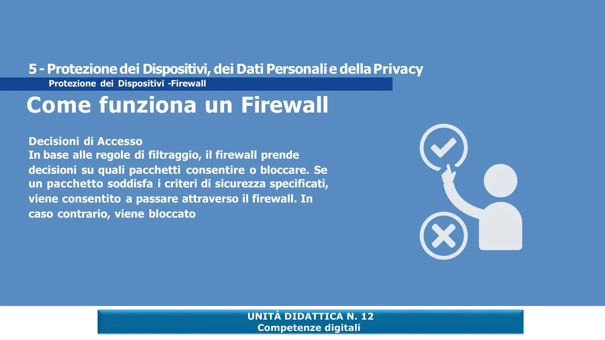
Protezione dei Dispositivi -Firewall Come funziona un Firewall Decisioni di Accesso In base alle regole di filtraggio, il firewall prende decisioni su quali pacchetti consentire o bloccare. Se un pacchetto soddisfa i criteri di sicurezza specificati, viene consentito a passare attraverso il firewall. In caso contrario, viene bloccato
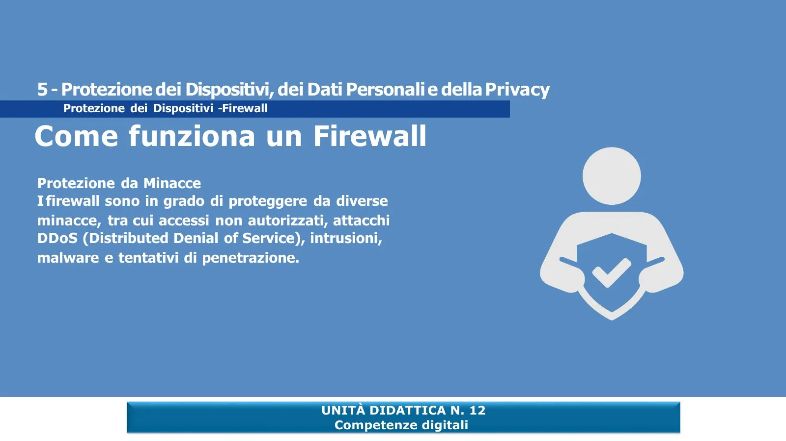
Protezione dei Dispositivi -Firewall Come funziona un Firewall Protezione da Minacce I firewall sono in grado di proteggere da diverse minacce, tra cui accessi non autorizzati, attacchi DDoS (Distributed Denial of Service), intrusioni, malware e tentativi di penetrazione.
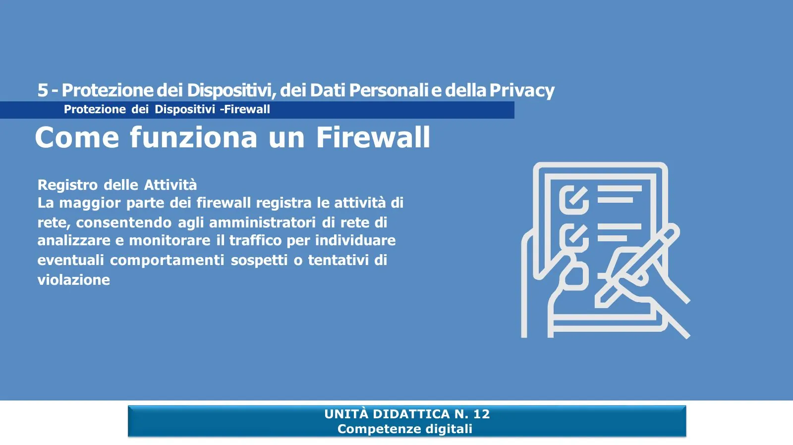
Protezione dei Dispositivi -Firewall Come funziona un Firewall Registro delle Attività La maggior parte dei firewall registra le attività di rete, consentendo agli amministratori di rete di analizzare e monitorare il traffico per individuare eventuali comportamenti sospetti o tentativi di violazione
Configura il firewall e guarda il traffico
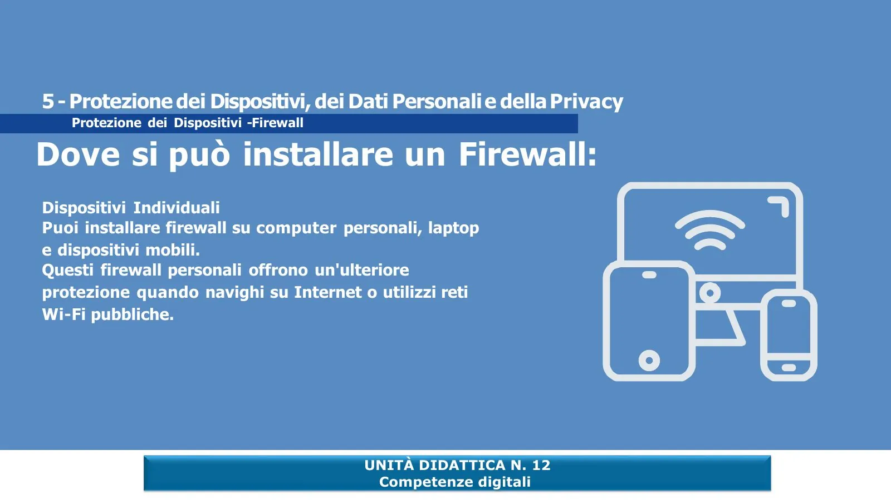
Protezione dei Dispositivi -Firewall Dove si può installare un Firewall: Dispositivi Individuali Puoi installare firewall su computer personali, laptop e dispositivi mobili. Questi firewall personali offrono un'ulteriore protezione quando navighi su Internet o utilizzi reti Wi-Fi pubbliche.
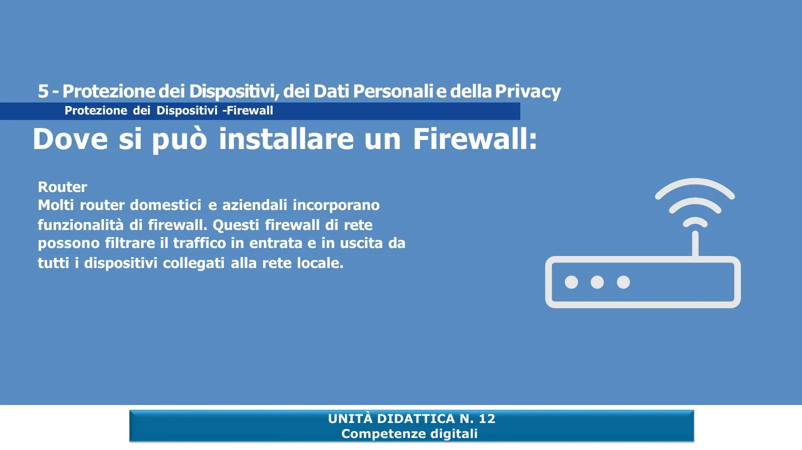
Protezione dei Dispositivi -Firewall Dove si può installare un Firewall: Router Molti router domestici e aziendali incorporano funzionalità di firewall. Questi firewall di rete possono filtrare il traffico in entrata e in uscita da tutti i dispositivi collegati alla rete locale.
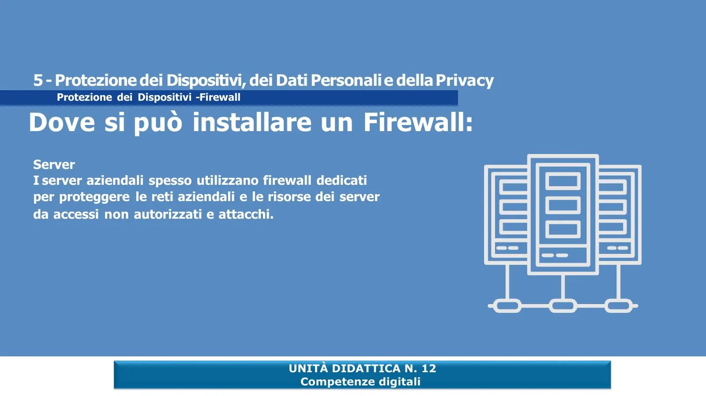
Protezione dei Dispositivi -Firewall Dove si può installare un Firewall: Server I server aziendali spesso utilizzano firewall dedicati per proteggere le reti aziendali e le risorse dei server da accessi non autorizzati e attacchi.
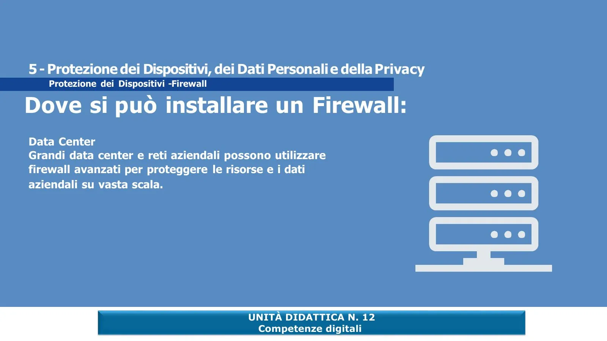
Protezione dei Dispositivi -Firewall Dove si può installare un Firewall: Data Center Grandi data center e reti aziendali possono utilizzare firewall avanzati per proteggere le risorse e i dati aziendali su vasta scala.
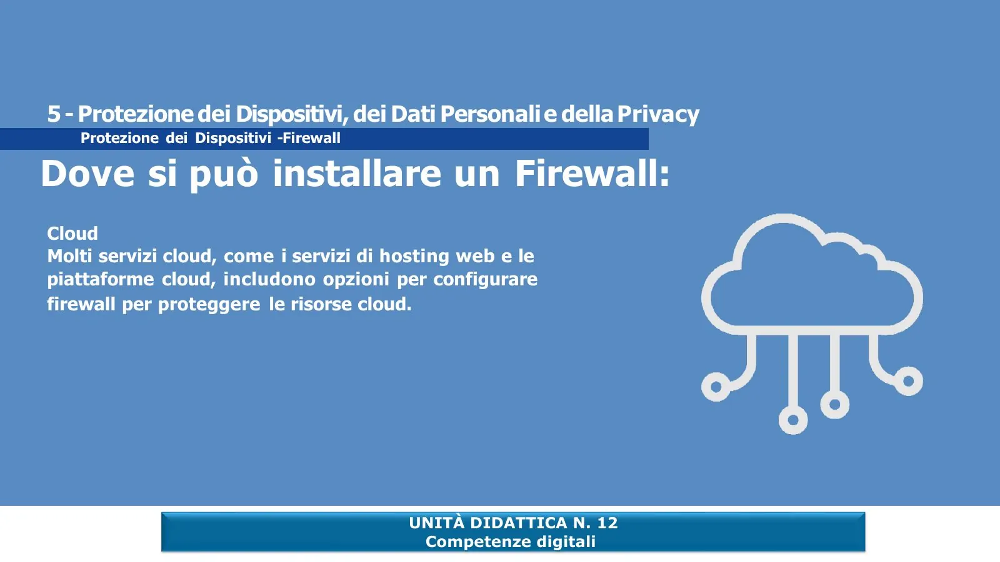
Protezione dei Dispositivi -Firewall Dove si può installare un Firewall: Cloud Molti servizi cloud, come i servizi di hosting web e le piattaforme cloud, includono opzioni per configurare firewall per proteggere le risorse cloud.
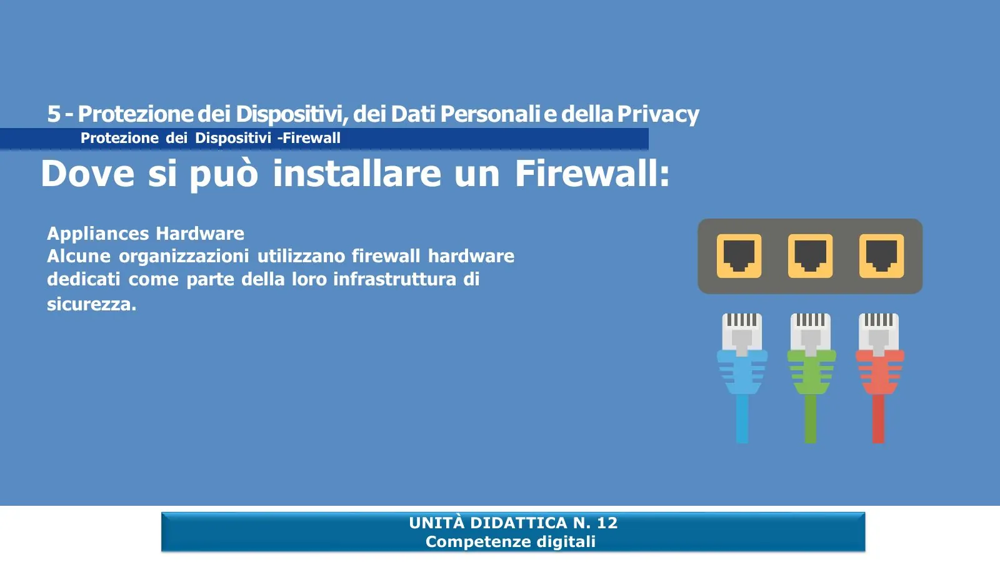
Protezione dei Dispositivi -Firewall Dove si può installare un Firewall: Appliances Hardware Alcune organizzazioni utilizzano firewall hardware dedicati come parte della loro infrastruttura di sicurezza.
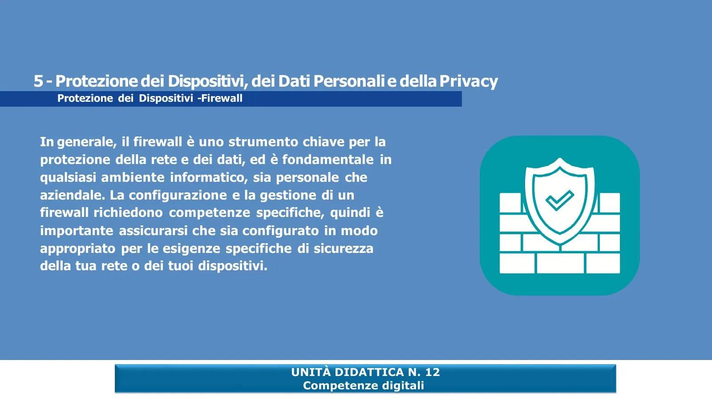
Protezione dei Dispositivi -Firewall In generale, il firewall è uno strumento chiave per la protezione della rete e dei dati, ed è fondamentale in qualsiasi ambiente informatico, sia personale che aziendale. La configurazione e la gestione di un firewall richiedono competenze specifiche, quindi è importante assicurarsi che sia configurato in modo appropriato per le esigenze specifiche di sicurezza della tua rete o dei tuoi dispositivi.
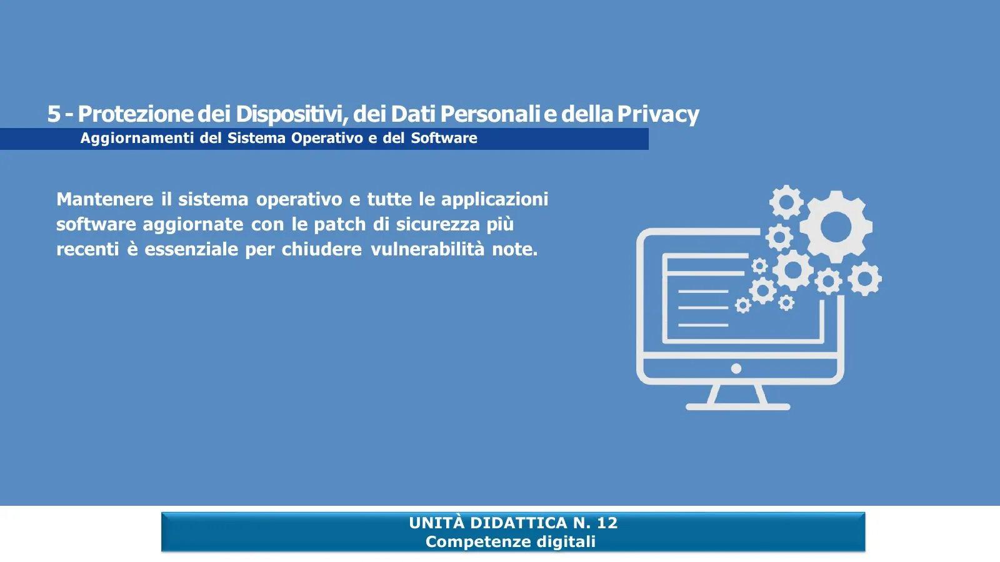
Aggiornamenti del Sistema Operativo e del Software Mantenere il sistema operativo e tutte le applicazioni software aggiornate con le patch di sicurezza più recenti è essenziale per chiudere vulnerabilità note.
«Ricordamelo domani»: perché non rimandare gli aggiornamenti
1ScopertaViene trovata una falla nel software.
2CorrezioneIl produttore rilascia la patch.
3PubblicitàLa falla diventa nota anche ai criminali.
4AttacchiColpiscono chi non ha aggiornato.
Dopo il rilascio della correzione, ogni giorno di ritardo è un giorno di esposizione a una falla nota.
Da fare: aggiornamenti automatici su PC, telefono, browser, router; sostituire i dispositivi che non ricevono più aggiornamenti.
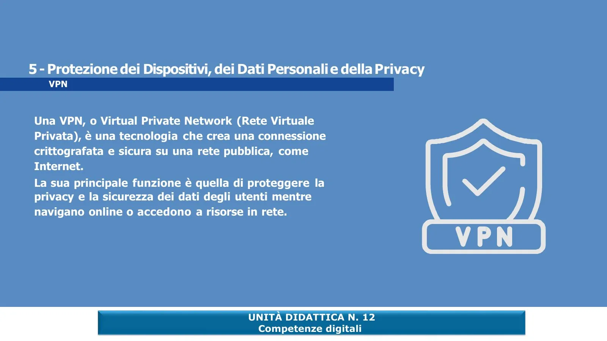
VPN Una VPN, o Virtual Private Network (Rete Virtuale Privata), è una tecnologia che crea una connessione crittografata e sicura su una rete pubblica, come Internet. La sua principale funzione è quella di proteggere la privacy e la sicurezza dei dati degli utenti mentre navigano online o accedono a risorse in rete.
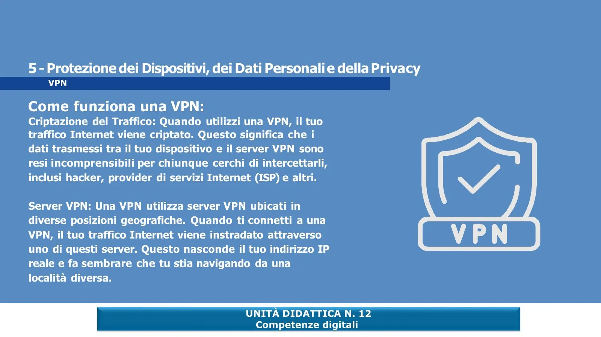
VPN Come funziona una VPN: Criptazione del Traffico: Quando utilizzi una VPN, il tuo traffico Internet viene criptato. Questo significa che i dati trasmessi tra il tuo dispositivo e il server VPN sono resi incomprensibili per chiunque cerchi di intercettarli, inclusi hacker, provider di servizi Internet (ISP) e altri. Server VPN: Una VPN utilizza server VPN ubicati in diverse posizioni geografiche. Quando ti connetti a una VPN, il tuo traffico Internet viene instradato attraverso uno di questi server. Questo nasconde il tuo indirizzo IP reale e fa sembrare che tu stia navigando da una località diversa.
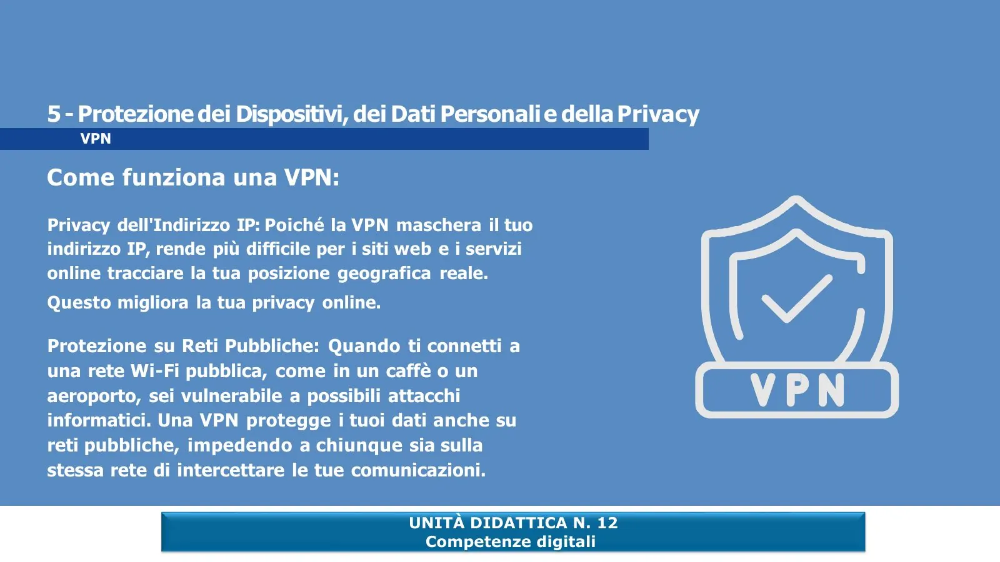
VPN Come funziona una VPN: Privacy dell'Indirizzo IP: Poiché la VPN maschera il tuo indirizzo IP, rende più difficile per i siti web e i servizi online tracciare la tua posizione geografica reale. Questo migliora la tua privacy online. Protezione su Reti Pubbliche: Quando ti connetti a una rete Wi-Fi pubblica, come in un caffè o un aeroporto, sei vulnerabile a possibili attacchi informatici. Una VPN protegge i tuoi dati anche su reti pubbliche, impedendo a chiunque sia sulla stessa rete di intercettare le tue comunicazioni.
VPN Come funziona una VPN: Accesso a Contenuti Bloccati: Le VPN consentono di aggirare le restrizioni geografiche imposte su alcuni siti web e servizi online. Ad esempio, puoi accedere a contenuti disponibili solo in determinate regioni geografiche. Sicurezza delle Comunicazioni: Una VPN protegge le comunicazioni tra il tuo dispositivo e il server VPN da intercettazioni, garantendo che nessuno possa leggere o intercettare i tuoi dati.
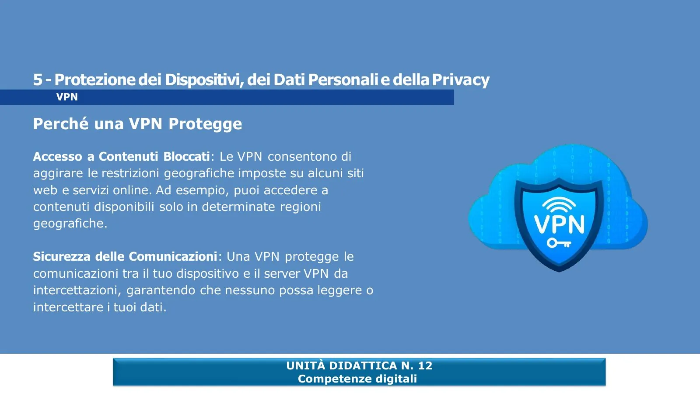
VPN Perché una VPN Protegge Accesso a Contenuti Bloccati: Le VPN consentono di aggirare le restrizioni geografiche imposte su alcuni siti web e servizi online. Ad esempio, puoi accedere a contenuti disponibili solo in determinate regioni geografiche. Sicurezza delle Comunicazioni: Una VPN protegge le comunicazioni tra il tuo dispositivo e il server VPN da intercettazioni, garantendo che nessuno possa leggere o intercettare i tuoi dati.
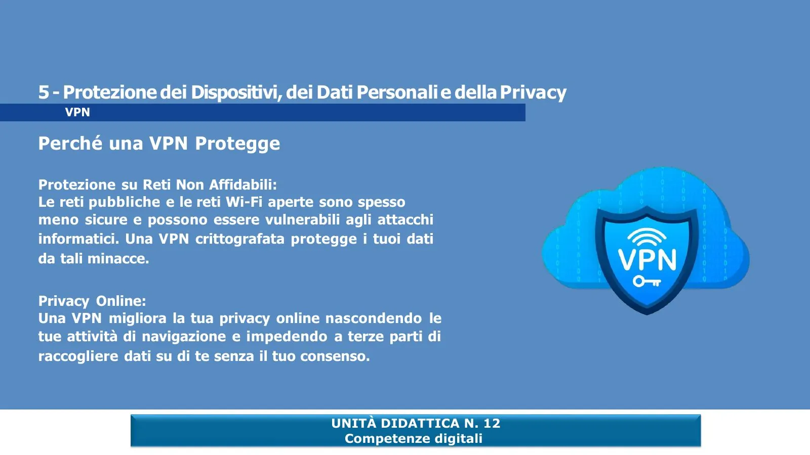
VPN Perché una VPN Protegge Protezione su Reti Non Affidabili: Le reti pubbliche e le reti Wi-Fi aperte sono spesso meno sicure e possono essere vulnerabili agli attacchi informatici. Una VPN crittografata protegge i tuoi dati da tali minacce. Privacy Online: Una VPN migliora la tua privacy online nascondendo le tue attività di navigazione e impedendo a terze parti di raccogliere dati su di te senza il tuo consenso.
Chi vede che cosa, con e senza VPN
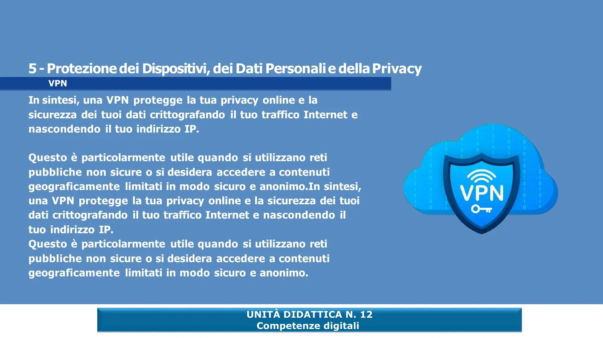
VPN In sintesi, una VPN protegge la tua privacy online e la sicurezza dei tuoi dati crittografando il tuo traffico Internet e nascondendo il tuo indirizzo IP. Questo è particolarmente utile quando si utilizzano reti pubbliche non sicure o si desidera accedere a contenuti geograficamente limitati in modo sicuro e anonimo.In sintesi, una VPN protegge la tua privacy online e la sicurezza dei tuoi dati crittografando il tuo traffico Internet e nascondendo il tuo indirizzo IP. Questo è particolarmente utile quando si utilizzano reti pubbliche non sicure o si desidera accedere a contenuti geograficamente limitati in modo sicuro e anonimo.
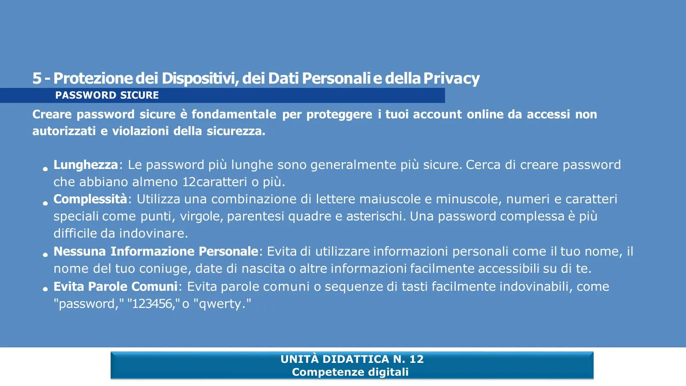
PASSWORD SICURE Creare password sicure è fondamentale per proteggere i tuoi account online da accessi non autorizzati e violazioni della sicurezza. Lunghezza: Le password più lunghe sono generalmente più sicure. Cerca di creare password che abbiano almeno 12caratteri o più. Complessità: Utilizza una combinazione di lettere maiuscole e minuscole, numeri e caratteri speciali come punti, virgole, parentesi quadre e asterischi. Una password complessa è più difficile da indovinare. Nessuna Informazione Personale: Evita di utilizzare informazioni personali come il tuo nome, il nome del tuo coniuge, date di nascita o altre informazioni facilmente accessibili su di te. Evita Parole Comuni: Evita parole comuni o sequenze di tasti facilmente indovinabili, come "password," "123456," o "qwerty."
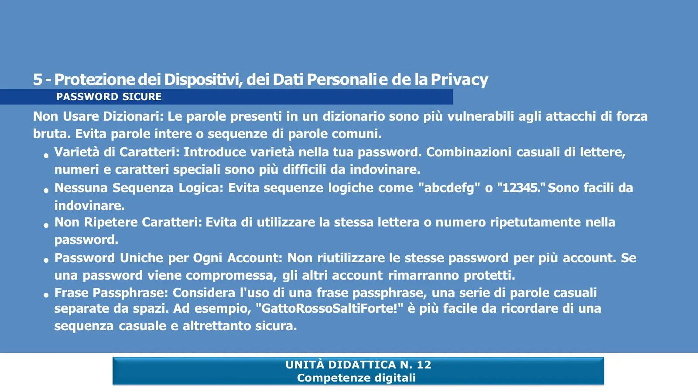
PASSWORD SICURE Non Usare Dizionari: Le parole presenti in un dizionario sono più vulnerabili agli attacchi di forza bruta. Evita parole intere o sequenze di parole comuni. Varietà di Caratteri: Introduce varietà nella tua password. Combinazioni casuali di lettere, numeri e caratteri speciali sono più difficili da indovinare. Nessuna Sequenza Logica: Evita sequenze logiche come "abcdefg" o "12345." Sono facili da indovinare. Non Ripetere Caratteri: Evita di utilizzare la stessa lettera o numero ripetutamente nella password. Password Uniche per Ogni Account: Non riutilizzare le stesse password per più account. Se una password viene compromessa, gli altri account rimarranno protetti. Frase Passphrase: Considera l'uso di una frase passphrase, una serie di parole casuali separate da spazi. Ad esempio, "GattoRossoSaltiForte!" è più facile da ricordare di una sequenza casuale e altrettanto sicura.
Quanto è robusta una password?
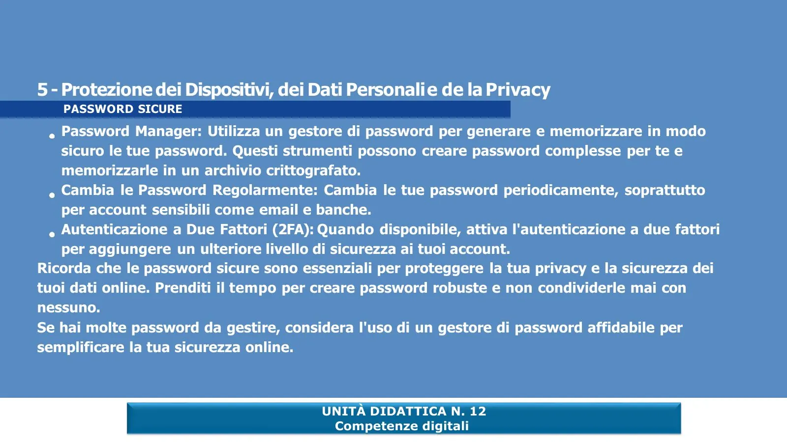
PASSWORD SICURE Password Manager: Utilizza un gestore di password per generare e memorizzare in modo sicuro le tue password. Questi strumenti possono creare password complesse per te e memorizzarle in un archivio crittografato. Cambia le Password Regolarmente: Cambia le tue password periodicamente, soprattutto per account sensibili come email e banche. Autenticazione a Due Fattori (2FA): Quando disponibile, attiva l'autenticazione a due fattori per aggiungere un ulteriore livello di sicurezza ai tuoi account. Ricorda che le password sicure sono essenziali per proteggere la tua privacy e la sicurezza dei tuoi dati online. Prenditi il tempo per creare password robuste e non condividerle mai con nessuno. Se hai molte password da gestire, considera l'uso di un gestore di password affidabile per semplificare la tua sicurezza online.
Autenticazione a due fattori: due prove diverse
🧠
Qualcosa che sai
Password, PIN
📱
Qualcosa che hai
Telefono con app di autenticazione, chiavetta di sicurezza
👆
Qualcosa che sei
Impronta, volto
Con la 2FA, una password rubata da sola non basta. Attivatela per email, PEC, banca, social dell’attività e account Google/Microsoft. SPID di livello 2 usa proprio due fattori.
Precisazione alla slide 92: le linee guida attuali (NIST SP 800-63B) sconsigliano di cambiare la password a scadenza fissa; si cambia quando si sospetta che sia stata compromessa.
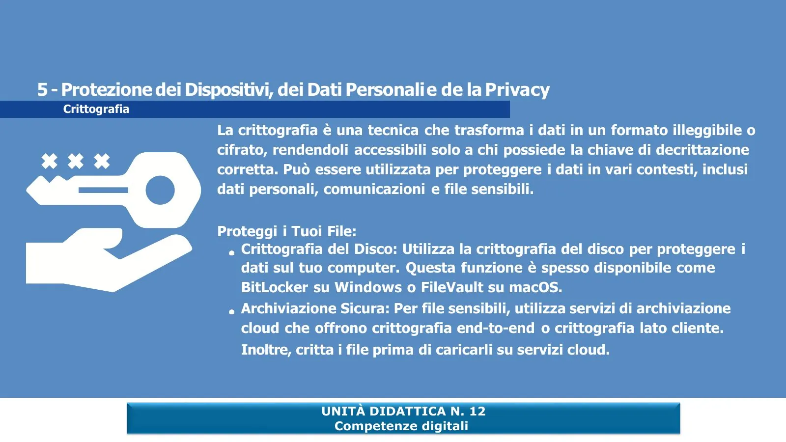
Crittografia La crittografia è una tecnica che trasforma i dati in un formato illeggibile o cifrato, rendendoli accessibili solo a chi possiede la chiave di decrittazione corretta. Può essere utilizzata per proteggere i dati in vari contesti, inclusi dati personali, comunicazioni e file sensibili. Proteggi i Tuoi File: Crittografia del Disco: Utilizza la crittografia del disco per proteggere i dati sul tuo computer. Questa funzione è spesso disponibile come BitLocker su Windows o FileVault su macOS. Archiviazione Sicura: Per file sensibili, utilizza servizi di archiviazione cloud che offrono crittografia end-to-end o crittografia lato cliente. Inoltre, critta i file prima di caricarli su servizi cloud.
Cifrare un messaggio (e romperlo)
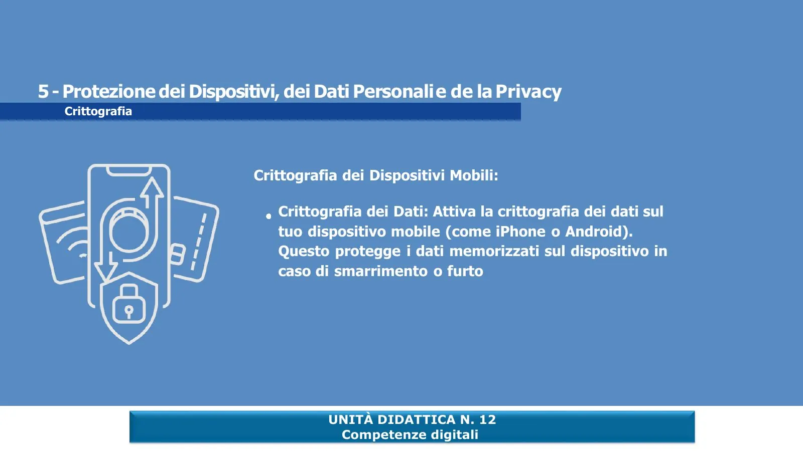
Crittografia Crittografia dei Dispositivi Mobili: Crittografia dei Dati: Attiva la crittografia dei dati sul tuo dispositivo mobile (come iPhone o Android). Questo protegge i dati memorizzati sul dispositivo in caso di smarrimento o furto
Backup I backup regolari sono essenziali per garantire la sicurezza e la disponibilità dei tuoi dati. Essi servono a creare copie di sicurezza dei tuoi file e delle informazioni importanti, in modo che tu possa recuperarli in caso di perdita, guasto hardware o altri problemi
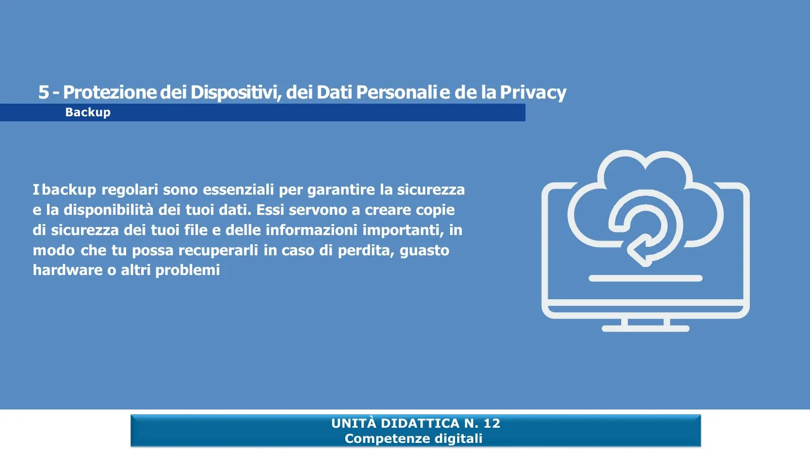
Backup I backup regolari sono essenziali per garantire la sicurezza e la disponibilità dei tuoi dati. Essi servono a creare copie di sicurezza dei tuoi file e delle informazioni importanti, in modo che tu possa recuperarli in caso di perdita, guasto hardware o altri problemi
La regola del backup 3-2-1
3
copie dei dati
l’originale + due copie di backup
2
supporti diversi
es. disco del PC + disco esterno
1
copia fuori sede
es. cloud o disco tenuto altrove
Sincronizzare non è fare backup. La sincronizzazione copia anche cancellazioni e file cifrati da un ransomware. E un backup non provato non è un backup: ripristinate un file ogni tanto.
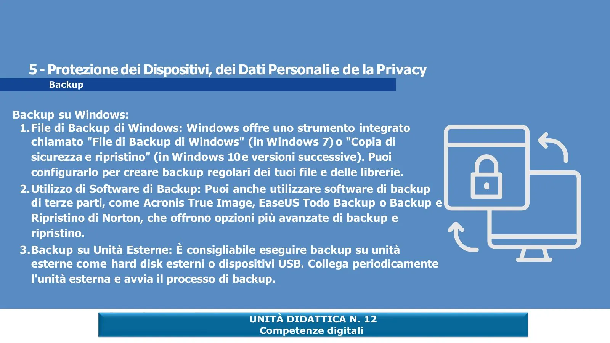
Backup Backup su Windows: 1.File di Backup di Windows: Windows offre uno strumento integrato chiamato "File di Backup di Windows" (in Windows 7) o "Copia di sicurezza e ripristino" (in Windows 10e versioni successive). Puoi configurarlo per creare backup regolari dei tuoi file e delle librerie. 2.Utilizzo di Software di Backup: Puoi anche utilizzare software di backup di terze parti, come Acronis True Image, EaseUS Todo Backup o Backup e Ripristino di Norton, che offrono opzioni più avanzate di backup e ripristino. 3.Backup su Unità Esterne: È consigliabile eseguire backup su unità esterne come hard disk esterni o dispositivi USB. Collega periodicamente l'unità esterna e avvia il processo di backup.
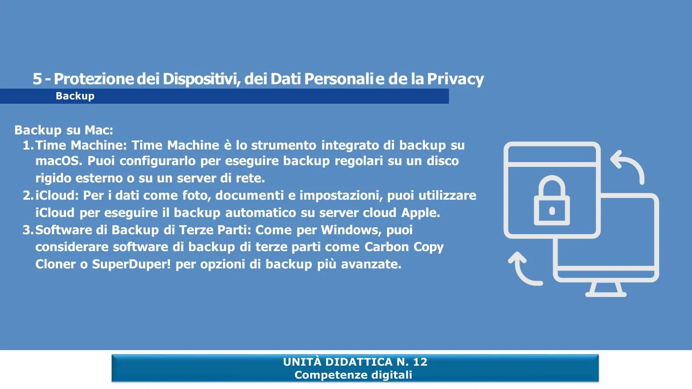
Backup Backup su Mac: 1.Time Machine: Time Machine è lo strumento integrato di backup su macOS. Puoi configurarlo per eseguire backup regolari su un disco rigido esterno o su un server di rete. 2.iCloud: Per i dati come foto, documenti e impostazioni, puoi utilizzare iCloud per eseguire il backup automatico su server cloud Apple. 3.Software di Backup di Terze Parti: Come per Windows, puoi considerare software di backup di terze parti come Carbon Copy Cloner o SuperDuper! per opzioni di backup più avanzate.
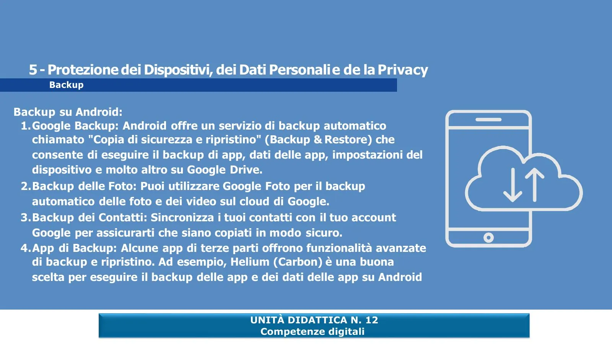
Backup Backup su Android: 1.Google Backup: Android offre un servizio di backup automatico chiamato "Copia di sicurezza e ripristino" (Backup & Restore) che consente di eseguire il backup di app, dati delle app, impostazioni del dispositivo e molto altro su Google Drive. 2.Backup delle Foto: Puoi utilizzare Google Foto per il backup automatico delle foto e dei video sul cloud di Google. 3.Backup dei Contatti: Sincronizza i tuoi contatti con il tuo account Google per assicurarti che siano copiati in modo sicuro. 4.App di Backup: Alcune app di terze parti offrono funzionalità avanzate di backup e ripristino. Ad esempio, Helium (Carbon) è una buona scelta per eseguire il backup delle app e dei dati delle app su Android
Backup Benefici dei Backup Regolari: Proteggono i dati da perdite accidentali o guasti hardware. Consentono il ripristino dei dati in caso di attacchi informatici o malware. Semplificano il trasferimento dei dati su nuovi dispositivi. Salvaguardano foto, documenti importanti, video e altro. Per garantire un backup efficace, è fondamentale eseguire backup regolari e assicurarsi che i dati di backup siano conservati in un luogo sicuro, preferibilmente al di fuori del dispositivo principale. Inoltre, controlla periodicamente l'integrità dei tuoi backup per assicurarti che siano completi e accessibili in caso di necessità.
Arriva l’incidente: i vostri dati si salvano?
Privacy Online La protezione della privacy online è fondamentale per proteggere le tue informazioni personali e impedire che vengano utilizzate o accessibili senza il tuo consenso.
Privacy Online Utilizza una VPN (Virtual Private Network): Una VPN cripta il tuo traffico Internet, nascondendo la tua posizione e impedendo a terze parti di monitorare la tua attività online. Utilizzala soprattutto quando ti connetti a reti Wi-Fi pubbliche non sicure. Mantieni Software e Dispositivi Aggiornati: Assicurati che il sistema operativo, le applicazioni e gli antivirus siano aggiornati con le ultime patch di sicurezza per proteggere il tuo dispositivo da vulnerabilità note.
Privacy Online Password Sicure: Utilizza password robuste e uniche per ogni account online. Considera l'uso di un gestore di password per gestire le tue password in modo sicuro. Autenticazione a Due Fattori (2FA): Abilita l'autenticazione a due fattori quando è disponibile per i tuoi account online. Questo fornisce un ulteriore livello di sicurezza richiedendo un codice di verifica o un altro elemento oltre alla password
Privacy Online Naviga in Modo Anonimo: Utilizza la modalità di navigazione in incognito o privata del tuo browser per impedire al browser di memorizzare la cronologia di navigazione e i cookie. Limita le Informazioni Personali Online: Riduci al minimo la quantità di informazioni personali che condividi online. Controlla le impostazioni di privacy sui social media e limita la condivisione di dati sensibili
Incognito e VPN: chi vede che cosa
Privacy Online Usa Servizi di Email Sicuri: Usa servizi di posta elettronica che offrono crittografia end-to-end per le tue comunicazioni. Questo assicura che solo il mittente e il destinatario possano leggere i messaggi. Gestisci le Autorizzazioni delle App: Sul tuo dispositivo mobile, gestisci le autorizzazioni delle app in modo da limitare l'accesso alle tue informazioni personali. Concedi l'accesso solo quando è necessario.
Questa email è una truffa? Cercate i segnali
Privacy Online Controllo dei Cookie e delle Tracce Online: Configura il browser per bloccare i cookie di terze parti e le tracce online. Cancella periodicamente la cronologia di navigazione e i cookie. Proteggi i Tuoi Dispositivi Mobile: Imposta una password o un PIN per il tuo dispositivo mobile e attiva la crittografia dei dati. Utilizza un'app di sicurezza mobile per proteggere da malware.
Il banner dei cookie, dal lato del cliente
Privacy Online Controllo della Privacy sui Social Media: Esamina e regola le impostazioni di privacy sui social media per controllare chi può vedere le tue informazioni personali e le tue attività online. Rivedi e Limita le App Terze: Periodicamente, rivedi e limita l'accesso delle app terze ai tuoi account online, come i social media e le app di email.
Privacy Online Cancella Account Inattivi o Non Utilizzati: Cancella o disattiva gli account online che non usi più per ridurre il rischio di accessi non autorizzati. Proteggi le Tue Informazioni Finanziarie: Utilizza servizi di pagamento sicuri e verifica periodicamente i tuoi estratti conto finanziari per rilevare attività sospette.
Checkpoint: le 8 abitudini della sezione 5
Antivirus attivo e aggiornato
Firewall del sistema acceso, router con password cambiata
Aggiornamenti automatici ovunque
VPN affidabile sui Wi-Fi pubblici
Password lunghe, diverse, in un password manager, con 2FA
Telefono e PC cifrati e con blocco schermo
Backup 3-2-1, provato
Diffidare di urgenza, link e allegati inattesi
Riprendete la lista del telefono perso: per ogni voce, quale abitudine vi avrebbe salvato?
6 - E-commerce e utilizzo dei social networks orientati alle attivitàdi marketing.
L'e-commerce, abbreviazione di "commercio elettronico" o "electronic commerce" in inglese, è un termine che si riferisce all'acquisto e alla vendita di beni e servizi su Internet. In sostanza, l'e-commerce è il processo di condurre transazioni commerciali online. Questo campo ha rivoluzionato il modo in cui le persone fanno shopping e le aziende conducono le loro attività commerciali.
Caratteristiche dell'e-commerce: 1. Transazioni Online: Le transazioni di acquisto e vendita avvengono su Internet tramite siti web, applicazioni mobili o altri canali online. 2. Accessibilità Globale: L'e-commerce consente alle aziende di raggiungere un pubblico globale, superando le limitazioni geografiche dei negozi fisici. 3. Varietà di Prodotti e Servizi: Si possono acquistare una vasta gamma di beni e servizi tramite l'e-commerce, che va dall'elettronica di consumo all'abbigliamento, dai servizi di streaming ai corsi online. 4. Convenienza: Gli acquirenti possono fare acquisti online 24 ore su 24, 7 giorni su 7, dalla comodità di casa o ovunque si trovino. 5. Diverse Modalità di Pagamento: L'e-commerce offre diverse opzioni di pagamento, inclusi metodi come carte di credito, PayPal, bonifici bancari e pagamenti in criptovalute. 6. Personalizzazione: Le aziende possono utilizzare dati e algoritmi per personalizzare l'esperienza di shopping online, suggerendo prodotti pertinenti in base alle preferenze dei clienti.
Vendere online: che cosa serve davvero
1VetrinaSito con carrello, marketplace o negozio sui social.
2PagamentiCarte, wallet, bonifico: servizi che gestiscono i dati delle carte.
3LogisticaImballo, corriere, resi.
4RegoleInformazioni al consumatore, recesso, privacy e cookie, fatturazione elettronica.
Per i consumatori il Codice del consumo prevede, di regola, il diritto di recesso entro 14 giorni per gli acquisti a distanza.
Tipologie di E-commerce Business-to-Consumer (B2C): Questo è il modello più comune, in cui le aziende vendono direttamente ai consumatori. Ad esempio, un negozio online di abbigliamento che vende vestiti ai singoli acquirenti.
Tipologie di E-commerce Business-to-Business (B2B): In questo caso, le aziende vendono prodotti o servizi ad altre aziende. Ad esempio, un produttore di componenti elettronici che fornisce pezzi a un produttore di telefoni cellulari.
Tipologie di E-commerce Consumer-to-Consumer (C2C) In questo modello, i consumatori vendono direttamente ad altri consumatori. Un esempio è un sito web di aste online dove le persone vendono oggetti di seconda mano ad altri utenti.
Tipologie di E-commerce Consumer-to-Business (C2B): Qui, i consumatori offrono prodotti o servizi alle aziende. Ad esempio, un blogger influente che offre spazi pubblicitari a marchi o aziende.
Tipologie di E-commerce Mobile Commerce (M-commerce): Questa è una sottocategoria dell'e-commerce che coinvolge l'uso di dispositivi mobili, come smartphone e tablet, per effettuare acquisti o transazioni finanziarie.
Tipologie di E-commerce Social Commerce: Coinvolge la vendita di prodotti o servizi direttamente attraverso piattaforme di social media, come Facebook o Instagram, spesso utilizzando il pulsante "Acquista ora".
Quale modello o canale?
Tipologie di E-commerce Dropshipping: In questo modello di business, il rivenditore non tiene fisicamente il prodotto in magazzino ma lo ordina dal fornitore solo quando viene effettuato un acquisto. Il fornitore si occupa quindi della spedizione diretta al cliente.
Il dropshipping: chi fa che cosa
utilizzo dei social networks orientati alle attività di marketing Utilizzare i social media orientati alle attività di marketing richiede una strategia ben pianificata e l'implementazione di tecniche specifiche per raggiungere il tuo pubblico di riferimento e promuovere efficacemente i tuoi prodotti o servizi.
Le slide 120–129 sono un ciclo
utilizzo dei social networks orientati alle attività di marketing Definisci gli Obiettivi di Marketing: Identifica il Tuo Pubblico di Riferimento Prima di iniziare, stabilisci chiaramente gli Comprendi chi è il tuo pubblico target. Fai obiettivi di marketing che desideri ricerche di mercato per identificare le loro raggiungere tramite i social media. Questi caratteristiche demografiche, interessi, obiettivi possono includere aumentare la comportamenti online e preferenze. consapevolezza del marchio, generare lead, aumentare le vendite o migliorare l'interazione con i clienti.
utilizzo dei social networks orientati alle attività di marketing Scegli le Piattaforme Social Giuste Non è necessario essere su tutte le piattaforme sociali. Scegli le piattaforme che meglio si adattano al tuo pubblico e agli obiettivi di marketing. Ad esempio, Facebook, Instagram, Twitter, LinkedIn e Pinterest sono piattaforme popolari, ma ognuna ha un pubblico diverso
utilizzo dei social networks orientati alle attività di marketing Crea un Piano di Contenuti: Pianifica il tipo di contenuti che pubblicherai e con quale frequenza. Il contenuto dovrebbe essere rilevante, interessante e coinvolgente per il tuo pubblico.
utilizzo dei social networks orientati alle attività di marketing Utilizza Elementi Visuali di Alta Qualità: Le immagini e i video di alta qualità sono essenziali sui social media. Assicurati che i tuoi contenuti visivi siano attraenti e ben curati.
utilizzo dei social networks orientati alle attività di marketing Coinvolgi il Tuo Pubblico: Rispondi ai commenti, alle domande e ai messaggi diretti in modo tempestivo. Interagisci con il tuo pubblico in modo autentico e costruisci una relazione con loro
Quanto coinvolge un post?
utilizzo dei social networks orientati alle attività di marketing Pubblicità sui Social Media: Utilizza la pubblicità a pagamento su piattaforme come Facebook Ads, Instagram Ads e Twitter Ads per raggiungere un pubblico più ampio e mirato. Puoi definire budget e target specifici per le tue campagne.
utilizzo dei social networks orientati alle attività di marketing Monitora e Misura le Prestazioni: Utilizza strumenti di analisi integrati o di terze parti per monitorare le prestazioni delle tue attività sui social media. Misura metriche come l'engagement, il numero di follower, il traffico web generato e le conversioni.
Dalle visite agli ordini: l’imbuto
utilizzo dei social networks orientati alle attività di marketing Adatta la Tua Strategia: Non esiste una strategia universale per i social media. Osserva ciò che funziona meglio per il tuo pubblico e adatta la tua strategia di conseguenza. Sperimenta con diversi tipi di contenuti, orari di pubblicazione e toni di comunicazione.
utilizzo dei social networks orientati alle attività di marketing Sviluppa un Piano di Contenuti a Lungo Termine Crea un piano di contenuti a lungo termine che copra diverse settimane o mesi. Questo ti aiuterà a mantenere una presenza costante e coerente sui social media. Gestione della Crisi Prepara un piano per affrontare situazioni di crisi o commenti negativi. Rispondi in modo professionale e gestisci le situazioni con attenzione..
utilizzo dei social networks orientati alle attività di marketing Aggiornati in continuazione I social media sono in continua evoluzione. Mantieniti aggiornato sulle nuove tendenze e funzionalità delle piattaforme sociali per sfruttarle al meglio.
Laboratorio (25 minuti): quattro settimane di contenuti
Settimana
Argomento
Formato
Canale
Obiettivo
Indicatore
1
Presentazione dell’attività
Video breve
Instagram
Farsi conoscere
Copertura
2
Dietro le quinte
Foto + testo
Facebook
Fiducia
Commenti
3
Offerta di lancio
Carosello
Instagram
Vendite
Clic e ordini
4
Recensione di un cliente
Storia
Instagram
Credibilità
Condivisioni
Compilate la stessa tabella per la vostra idea in un foglio di calcolo (Incontro 3) e condividetela con il docente in sola lettura.
Checkpoint dell’Incontro 4
Sicurezza e privacy
Difesa a strati: nessuna misura basta da sola.
Password + 2FA, aggiornamenti, backup 3-2-1.
Incognito e VPN non rendono anonimi.
I dati dei clienti sono una responsabilità (GDPR).
E-commerce e social
Modello (B2C, B2B…) e canale (mobile, social) sono cose diverse.
Obiettivi, pubblico, piano dei contenuti.
Misurate: coinvolgimento e conversioni.
Ora il test di fine incontro (10 domande, soglia 7) e poi la verifica finale della lezione.
Con la presentazione selezionata: →spazio avanti · ← indietro · F schermo intero · N note · O indice · L laser · B schermo nero · numero + Invio per saltare. Nelle simulazioni usate mouse o dito: i tasti funzionano di nuovo appena cliccate fuori dai campi.